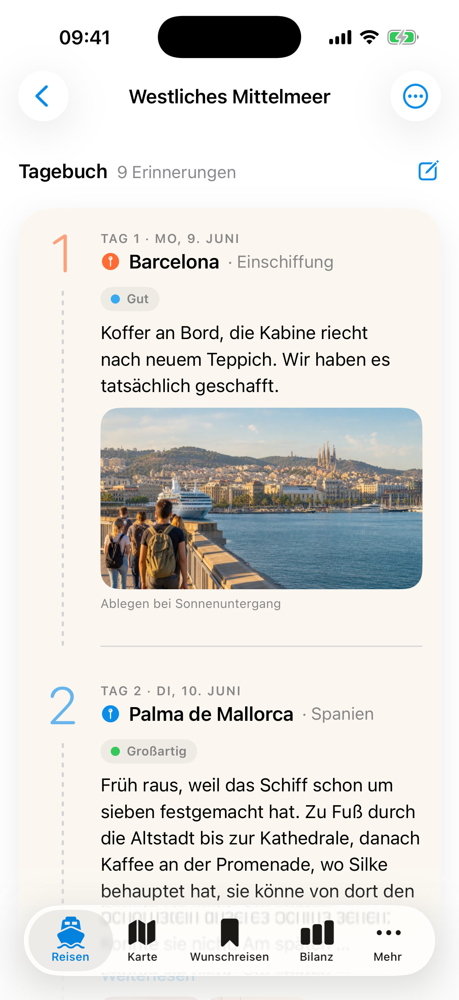
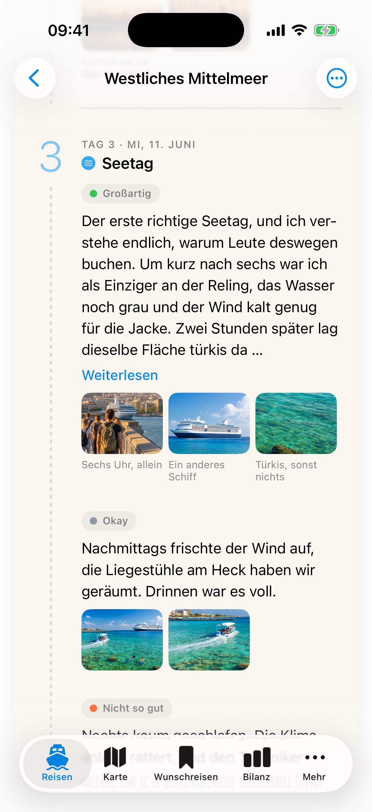
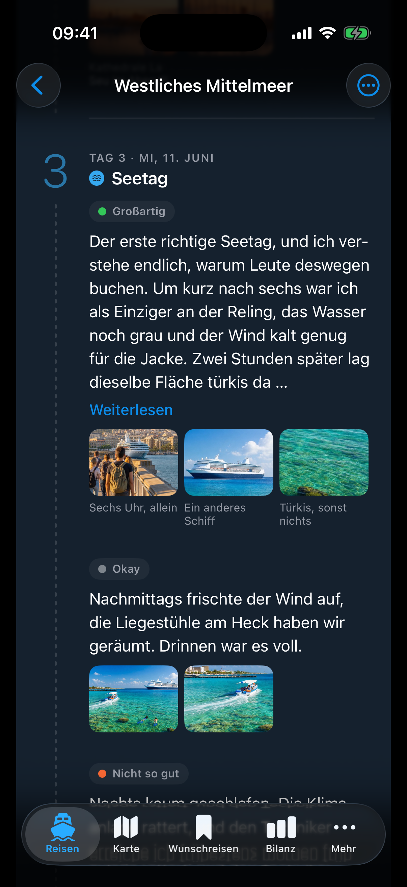
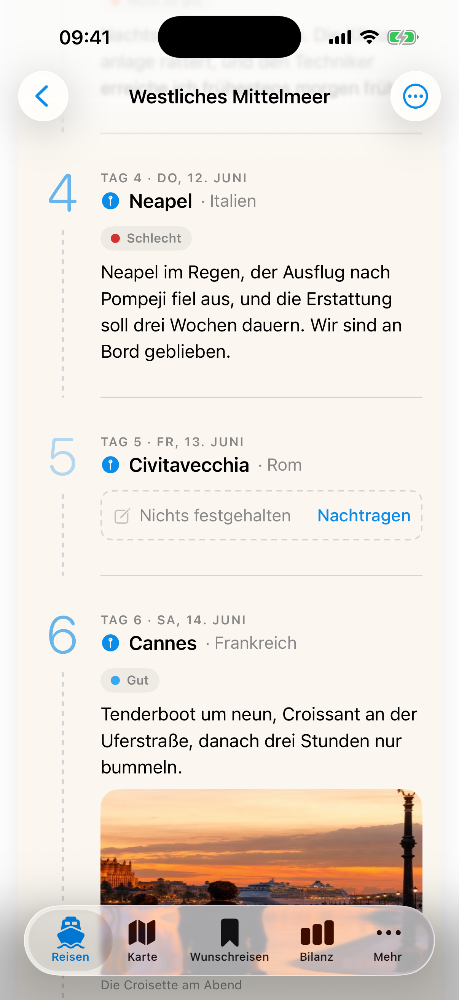
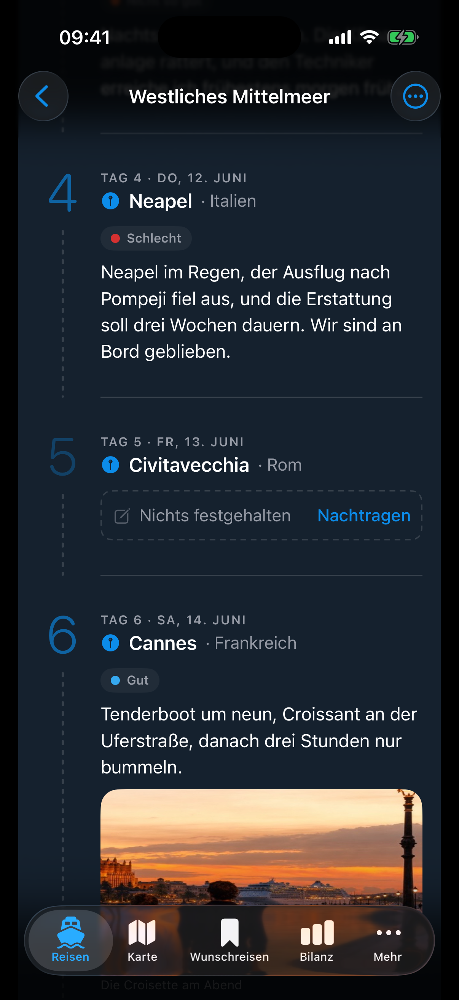
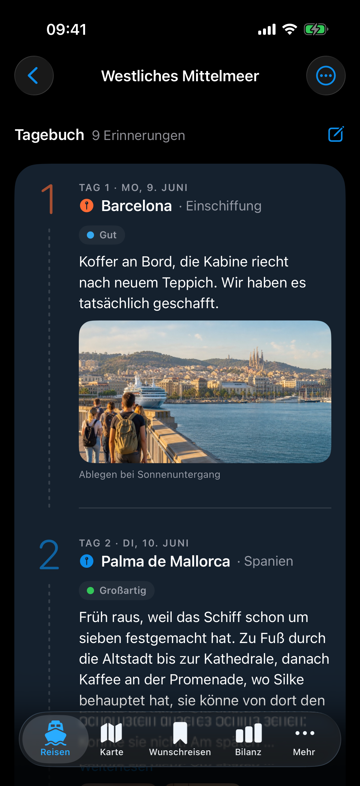
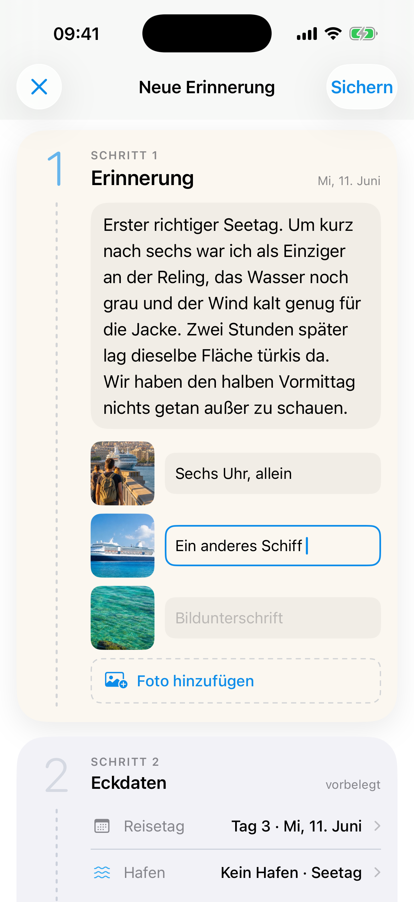
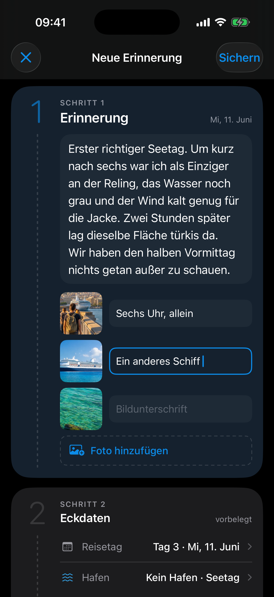
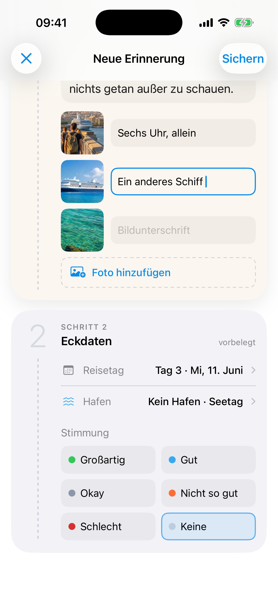
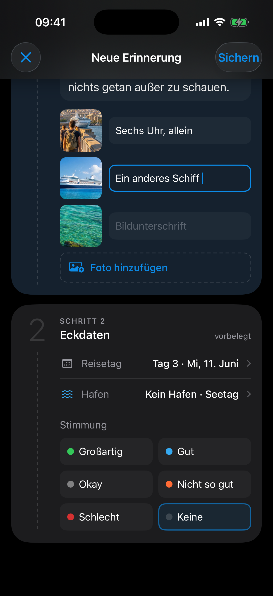

Alle Bilder sind Screenshots des laufenden Prototyps
(prototype-journal/, Shots: directions/shots/logbuch-r3/).
Andrea, 54, hält am Seetag fest, wie der Morgen war — der Tagebuch-Strang ist der
Screen, wegen dem die App nach der Reise noch geöffnet wird.
| Hell | Dunkel | |
|---|---|---|
| Tagebuch-Strang · obenEinstieg, Tag 1–2 |  journal--light |
journal--dark |
| Tagebuch-Strang · Tag 3Härtefall: Seetag, drei Einträge, ein langer mit Fotos |  journal.tag3--light |
 journal.tag3--dark |
| Tagebuch-Strang · Tag 5leerer Tag (blasse Ziffer, gestrichelter Kasten) |  journal.tag5--light |
 journal.tag5--dark |
| Tagebuch-Strang · RuhelageEndzustand nach Einlauf-Animation (Standbild, deckungsgleich mit „oben") | journal.motion--light |
 journal.motion--dark |
| Editor · Schritt 1Erinnerung zuerst: Text + Fotos |  editor--light |
 editor--dark |
| Editor · Schritt 2gescrollt: Eckdaten (Tag, Hafen, Stimmung) |  editor.scrolled--light |
 editor.scrolled--dark |
Nicht gerendert (bewusste Lücken dieses Prototyps): Leer-, Lade- und Fehlerzustände des Editors — die entstehen erst im nativen Bau (T8).